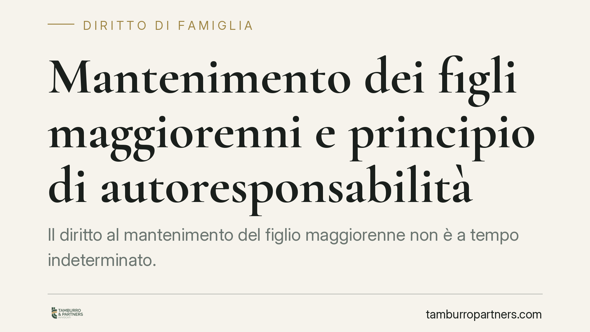

Mantenimento dei figli maggiorenni e principio di autoresponsabilità
Il diritto al mantenimento del figlio maggiorenne non è a tempo indeterminato. La giurisprudenza richiede al figlio di dimostrare un impegno concreto nella formazione e nella ricerca di un lavoro, con un rigore che cresce con l'età. In mancanza di prova, l'assegno può essere ridotto o revocato. Vediamo il quadro normativo e le ricadute pratiche per genitori e figli.

Il fatto
Il tema torna al centro del dibattito con le pronunce di merito che applicano il cosiddetto principio di autoresponsabilità del figlio maggiorenne. La formula giornalistica degli "ex giovani" — spesso usata per sintetizzare queste decisioni — rende l'idea: superata una certa soglia anagrafica, l'inerzia nel rendersi autonomi non può gravare a tempo indefinito sui genitori.
Inquadramento normativo
Il fondamento del mantenimento del figlio maggiorenne non ancora economicamente autosufficiente è l'art. 337-septies del Codice civile. La norma consente al giudice di disporre, valutate le circostanze, un assegno periodico in favore del figlio maggiorenne non indipendente, di regola versato direttamente a quest'ultimo.
L'art. 315-bis c.c. va richiamato solo come cornice generale dei doveri reciproci tra genitori e figli: tra questi, il dovere del figlio di contribuire al mantenimento della famiglia in relazione alle proprie capacità. Non è, dunque, la disposizione che regola l'assegno, ma inquadra il principio di responsabilità che la giurisprudenza ha poi valorizzato.
Sul punto è intervenuta la Corte di Cassazione a Sezioni Unite con la sentenza n. 25055 del 2021, che ha fissato alcune coordinate chiare: l'obbligo di mantenimento non è automatico né illimitato nel tempo; grava sul figlio che chiede l'assegno (o che si oppone alla sua revoca) l'onere di provare non solo la mancanza di autosufficienza, ma anche di essersi attivato con diligenza per raggiungerla. Il rigore della valutazione aumenta con l'avanzare dell'età.
Implicazioni pratiche
Il punto più rilevante è lo spostamento dell'onere della prova. Non è il genitore a dover dimostrare che il figlio potrebbe lavorare: è il figlio a dover provare di aver completato un percorso formativo coerente e di cercare attivamente un impiego, anche non perfettamente corrispondente alle aspirazioni.
Conta il fattore tempo. Un ventenne agli studi gode di una valutazione indulgente; un trentenne che non abbia concluso la formazione né cercato lavoro si trova in una posizione molto più fragile. L'assegno può essere ridotto progressivamente o revocato.
Attenzione, però: la cessazione dell'obbligo non è mai automatica. Finché un provvedimento del giudice non la dichiara, il genitore resta tenuto a versare quanto stabilito. Interrompere i pagamenti di propria iniziativa espone a richieste di arretrati e, nei casi più gravi, a conseguenze penali per violazione degli obblighi di assistenza familiare.
Resta inoltre una distinzione importante: la perdita del diritto all'assegno ordinario non cancella eventuali obblighi di sostegno nei confronti del figlio che versi in condizioni di non autosufficienza per ragioni diverse dalla semplice inerzia, ad esempio una disabilità.
Cosa fare in concreto
- Genitore che intende chiedere la revoca o la riduzione: non sospendere i versamenti. Presentare prima un ricorso per modifica delle condizioni, documentando l'età del figlio, il tempo trascorso e l'assenza di un impegno concreto.
- Genitore obbligato: conservare traccia dei pagamenti effettuati e di ogni elemento utile a ricostruire la situazione del figlio (percorso di studi concluso, eventuali redditi, ricerche di lavoro non intraprese).
- Figlio maggiorenne: raccogliere e conservare la prova del proprio impegno — iscrizioni, esami sostenuti, candidature, colloqui, tirocini, contratti anche precari. È questa documentazione a sostenere il diritto all'assegno.
- Entrambe le parti: valutare se le condizioni fissate in sede di separazione o divorzio siano ancora attuali. Un mutamento rilevante delle circostanze legittima la richiesta di modifica.
- In ogni caso, è opportuna una valutazione preventiva della posizione prima di avviare un procedimento o di resistervi, per calibrare le allegazioni e l'onere probatorio.
In sintesi
Il mantenimento del figlio maggiorenne poggia sull'equilibrio tra solidarietà familiare e autoresponsabilità. Il diritto esiste finché il figlio dimostra di meritarlo con un impegno effettivo; non si trasforma in una rendita permanente. La parola chiave, per genitori e figli, è la prova: senza documentazione, la posizione processuale si indebolisce rapidamente.
---
*Contributo informativo a cura di Tamburro & Partners — Avv. Giuseppe Tamburro. Non costituisce parere legale.*
Ogni famiglia ha il suo equilibrio.
Separazione, divorzio, affidamento, assegno: se vuoi un confronto riservato su una specifica situazione, scrivi allo studio. Ti rispondiamo entro un giorno lavorativo.